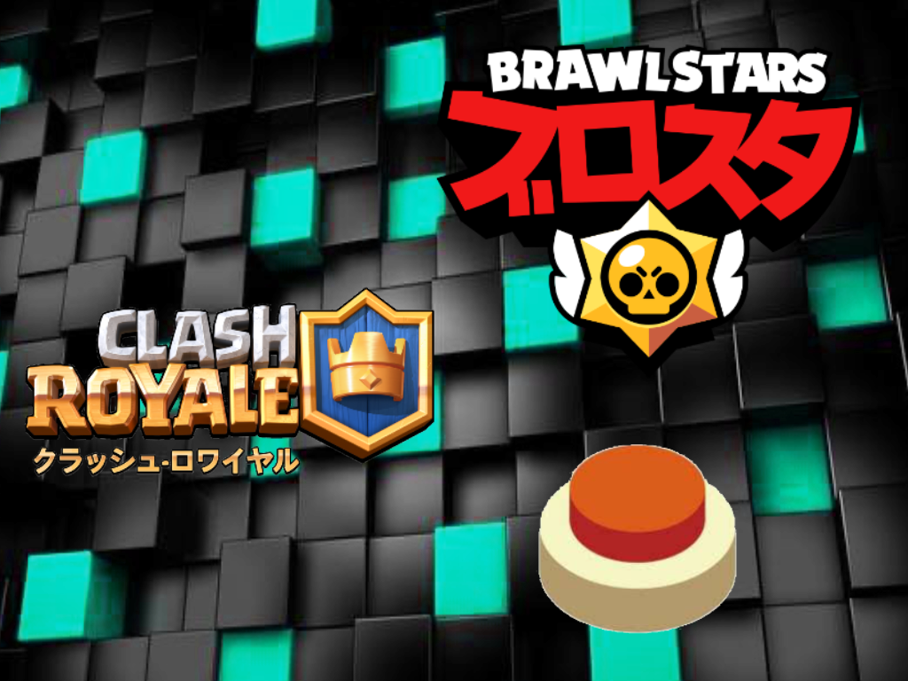
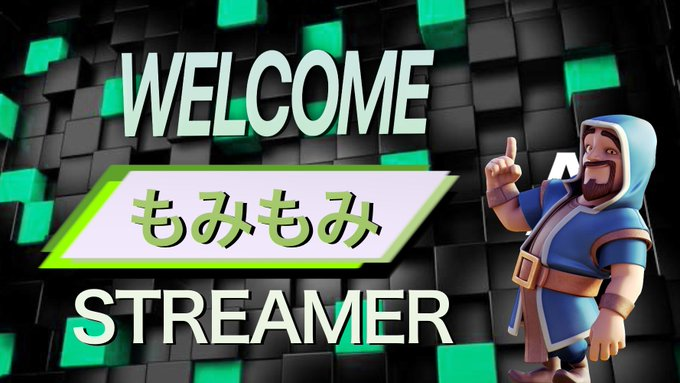
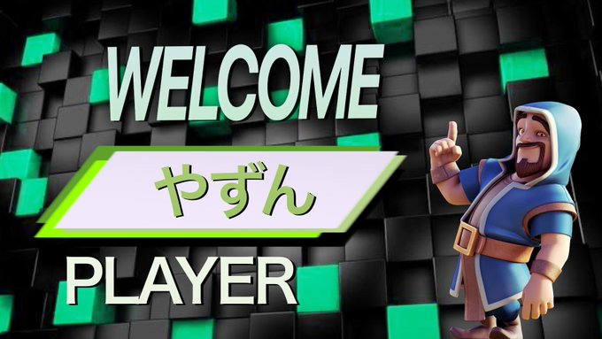
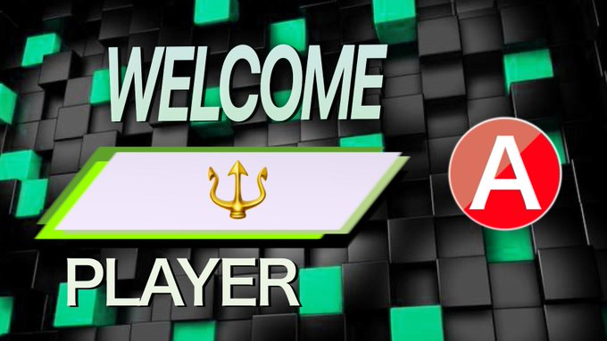
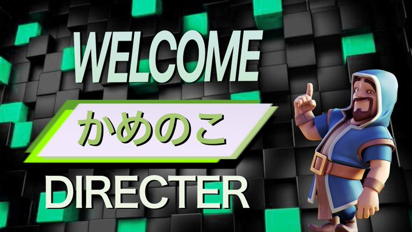
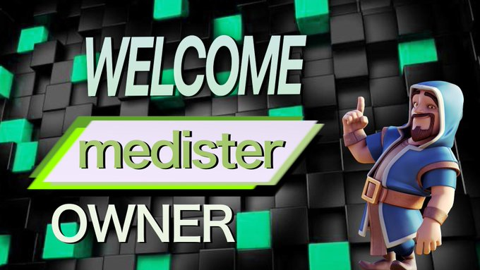

POLICY
提携クラブを中心に、将来のプロ契約を目指しながら、16歳からの育成型セミプロ契約選手もしくは奨学金制度選手の発掘を行い、アスリートとしても社会人としても一流を目指せる選手の人材育成と輩出を目指していきます。
2016年から「アスリートは競技人生を終えた後のキャリア形成が難しい」という現実の中で、Climax Lazuki | Arche Turtlehead e-sports GamingおよびAIKOGamingでは、ClashRoyale、BrowlStars、Quick Push Quizなどの種目を中心にアスリートが競技と仕事の両立を図れる正社員勤務環境を整備し続けてきました。
本制度（セミプロ契約・奨学金制度）では、トップアスリートを目指す育成年代・若手選手も対象に、プロとして得られる報酬に対する責任を体感させ、社会人としても活躍できる真の文武両道型プロアスリートを育てることを目的としています。3年以内に総勢200名程度のセミプロ契約選手を採用目標に掲げ、文武両道で一流を目指せるアスリートの輩出を目指していきます。
ACTIVITY CONTENT
僕は時々言っているのですが、
今の時代は人類史上、最もプロ活動セミプロ活動をするハードルが下がっています。
（ラクして大金持ちになれるとは言ってないよ）
そのジャンルが
マジックでも
ジャグリングでも
演奏でも
ラーメン食べるでも
何でも、本当に何でもお仕事になり得えます。
ちょっとしたコツはいりますけどね。
そのコツは誰も教えてくれないから、きっとみんな
「どーせ無理でしょ」って思ってしまうのかな。
一億総クリエイター、
一億総生産者時代。
今はプロもアマチュアも同じ地点にいます。
技術があるとかないとか関係ないです。
・・・とか色々言っても、現実なかなか踏み出しにくいですよね。
わかんないことだらけで。
プロもアマチュアも同じ地点の時代？
総クリエイター時代？
技術がなくても関係ない？
ひとつの好きがあらゆる仕事・活動になる？
そもそもどんな生活してるの？
次世代の生き方？働き方？
それらを見つける手助けとなれば幸いです。
今の時代は人類史上、最もプロ活動セミプロ活動をするハードルが下がっています。
（ラクして大金持ちになれるとは言ってないよ）
そのジャンルが
マジックでも
ジャグリングでも
演奏でも
ラーメン食べるでも
何でも、本当に何でもお仕事になり得えます。
ちょっとしたコツはいりますけどね。
そのコツは誰も教えてくれないから、きっとみんな
「どーせ無理でしょ」って思ってしまうのかな。
一億総クリエイター、
一億総生産者時代。
今はプロもアマチュアも同じ地点にいます。
技術があるとかないとか関係ないです。
・・・とか色々言っても、現実なかなか踏み出しにくいですよね。
わかんないことだらけで。
プロもアマチュアも同じ地点の時代？
総クリエイター時代？
技術がなくても関係ない？
ひとつの好きがあらゆる仕事・活動になる？
そもそもどんな生活してるの？
次世代の生き方？働き方？
それらを見つける手助けとなれば幸いです。
SECTION
HISTORY
Climax Kazuki Arche Turtlehead e-sorts Gaming（クライマックスカズキアーチタートルヘッドイースポーツゲーミング）は有志のゲーマーたちがプロデュースし運営しているセミプロゲーミングチームです。「絶頂するほど楽しみ、鈍足で小さい存在のカメの頭でさえ集まれば箱舟のように大きくそして頼もしくなるように」をチームスローガンとし、チームの名称もそれぞれから採用しています。交流戦や大会、日々の練習を通じてチーム内の絆をはぐくみ、またゲーム内のスキルも精神的にもつねに成長し続けすべての人々に愛され応援され、憧れるようなチームを目指しています。Climax Kazuki Arche Turtlehead e-sorts Gamingは2021年2月21日に設立された近年市場が拡大し続けているe-sportsチームの中でも新しい部類です。初期のclimax kazuki arche turtlehead esorts gamingでは全世界でヒットしているクラッシュロワイヤル、ブロウるスターズ、そしてクイズアプリの頂点みんなで早押しバトルの三部門が設立されました。それぞれ初期メンバーとしてかめのこ、きの、やずん、ろけっと、こいさん、そしてオーナーのうめよしが所属しました。その後初期メンバーのこいさんの脱退、新規メンバーの獲得を経て今もなお成長し続けています。
NEWS





RECRUIT
募集フォーム